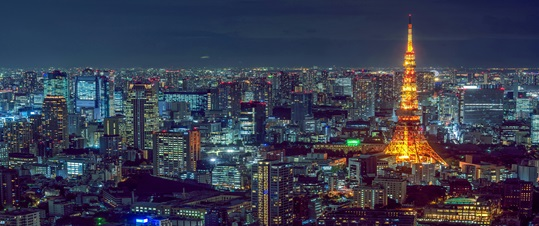
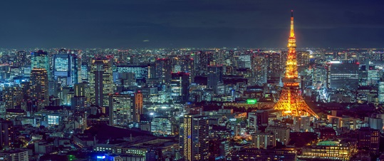
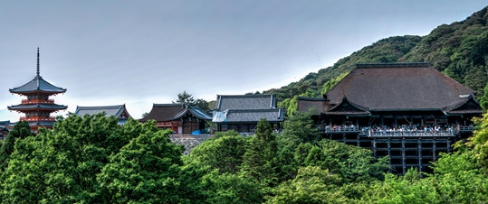
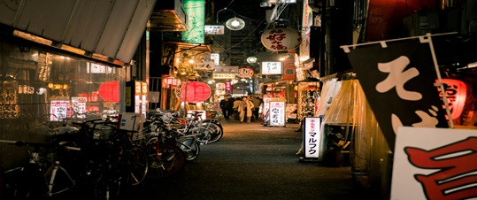
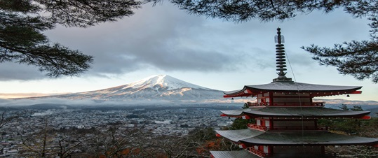

Guide to Tokyo
Tokyo is a bustling city where modernity meets tradition. Explore this dynamic metropolis with a 3-day guide to uncover its most fascinating highlights.
Tokyo is a bustling city where modernity meets tradition. Explore this dynamic metropolis with a 3-day guide to uncover its most fascinating highlights.
Kyoto is a city of timeless beauty, famous for its temples, shrines, and gardens. Follow this 3-day guide to fully immerse yourself in its rich history.
Osaka offers vibrant nightlife, amazing food, and lively neighborhoods. This 3-day guide will help you dive into the unique charm of this exciting city.
Hokkaido is famous for its natural landscapes and outdoor activities. Here is a 4-day itinerary to explore this fascinating island.
